平板继续跑 Claude 会话，手机远程看文字、发消息、插话、停止、回答授权卡。
执行环境、终端、工作区文件始终留在主机；中转服务器只转发端到端加密的密文。
会话托管把「正在运行的 Claude 会话」开放给另一台设备观察和有限控制，而不是把整台设备远程桌面化。
主机在托管面板里逐个会话开启托管；控制端凭配对码连接。配对码相当于这些会话的控制权，只给信任的设备。没有开启托管的会话对远端完全不可见。
/ 斜杠命令（改全局配置的请在主机做）cut）的授权卡——只能拒绝或到主机看全文主机生成独立 32 字节 secret。每个包用 AES-256-GCM：随机 12 字节 IV、16 字节认证标签，封装为 base64url(IV‖tag‖ciphertext)。附加认证数据 AAD = cc-host-v1:{room}:{id}:{direction} 把密文绑定到房间、请求编号和方向，防跨房间/跨方向重放。secret 只存在于配对码里，从不经过服务器。
中转服务器只看到不透明密文与随机编号；持久化只落 host/client 令牌的 SHA-256，不落明文、不落密钥、不记正文到日志。下文「真实演示」的中转视角会把经过的密文片段直接展示给你看。
配对码格式 CCH1. + base64url(JSON {v,url,room,clientToken,secret})。持有它即可操作所有已托管会话，因此默认隐藏、点击才显示，勿截图公开、用后清剪贴板。生产只允许 HTTPS 源站地址（测试显式允许回环）。
建房返回 hostToken 与 clientToken 两把独立凭据：主机用 hostToken 轮询/回复，控制端用 clientToken 发 RPC，服务器据此隔离双方。主机「吊销所有配对」删除房间、双方凭据立即失效；「取消托管」立即撤销该会话 grant；「暂停托管」只停远程访问、不停本地任务。
每个写请求（send/stop/answer/message）带唯一 32 位 hex 编号。主机先持久化预占编号再调用上游：回执丢失或网络重试时，同编号只返回第一次结果，绝不执行第二遍。编号台账绑定本次 boot 与该会话 grant；主机重启或重新托管后旧编号自然失效。操作身份绑定 op/sessionId/boot/grant/args，不因运输 expires 续期而重新执行。
CCH1. 开头完整代码安全地发给自己的手机。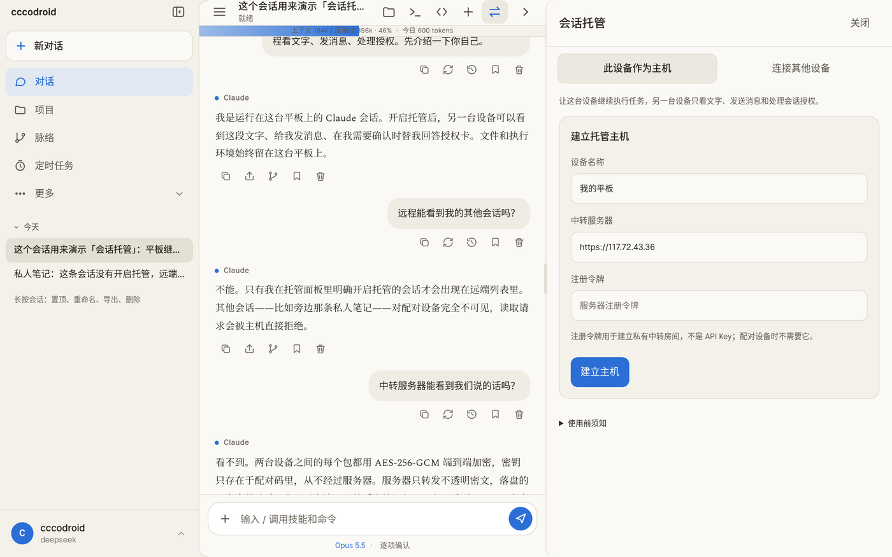
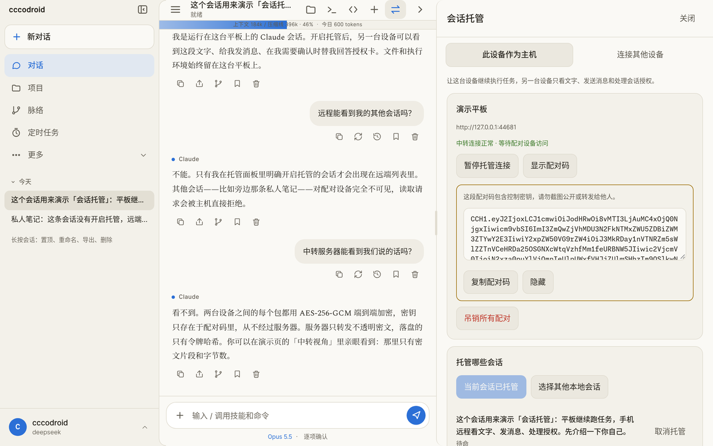
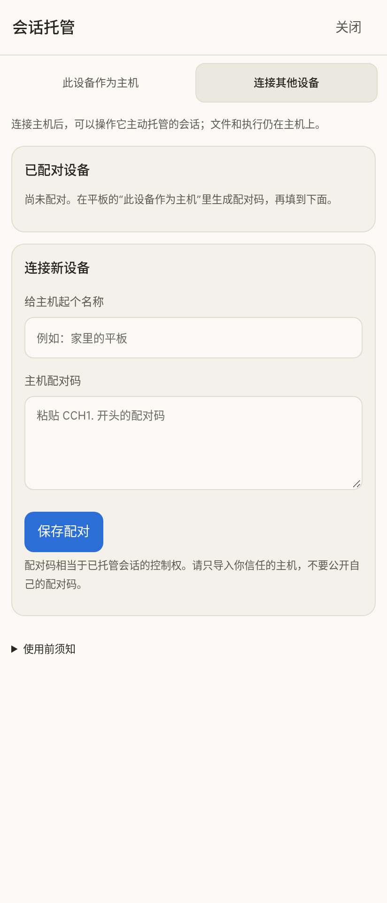
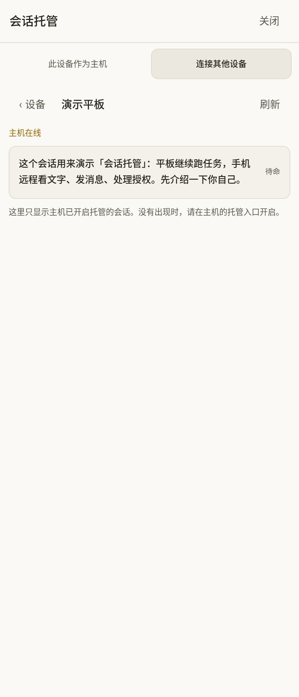
远程会话接入原聊天页的数据来源，不是独立页面：消息、工具卡、思考块、Markdown、滚动、历史窗口、输入区全部复用原组件。草稿按 remote:<remoteId>:<sid> 隔离，本机与远程同号会话不串草稿/权限/阅读位置。
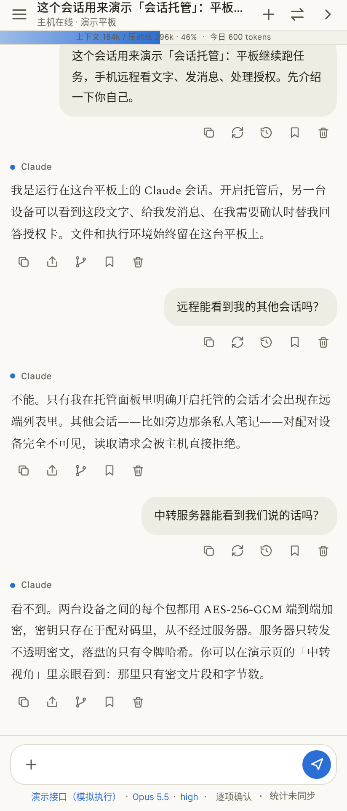
点击即清空输入、保留原文恢复入口，显示「正在发送到主机」；主机回执到达后进入连接/等待/思考/工具等真实阶段。失败恢复原文但不自动重发。插话把消息并进正在跑的这一轮，不打断当前步骤。
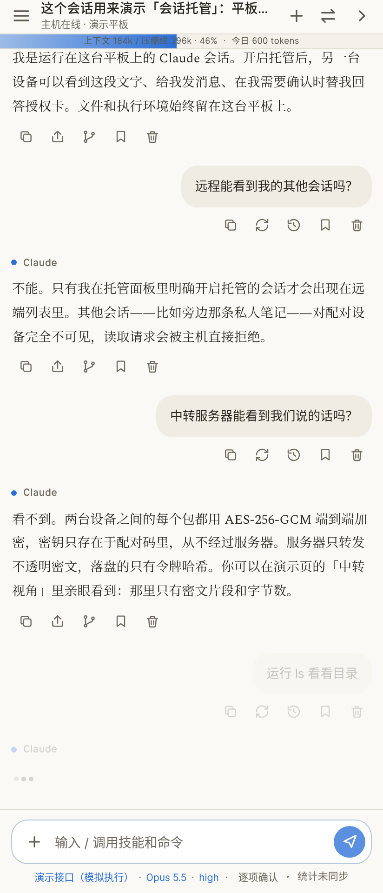
主机需要确认的工具会以授权卡出现，远程只给「允许 / 拒绝▾（拒绝 / 拒绝并停止）」，没有「始终允许」。命令与路径不截短、必须看全；被截短（cut）的卡禁止允许。
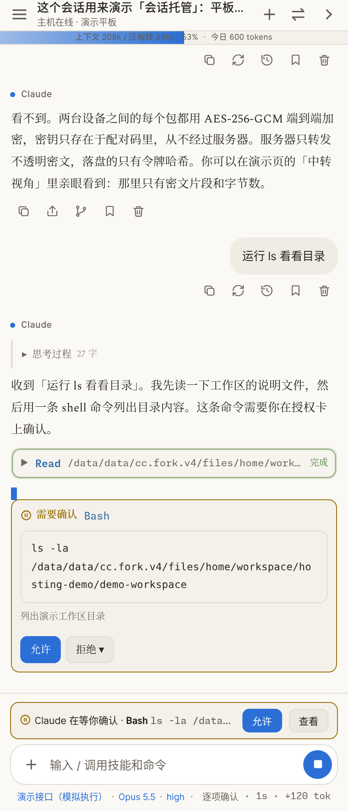
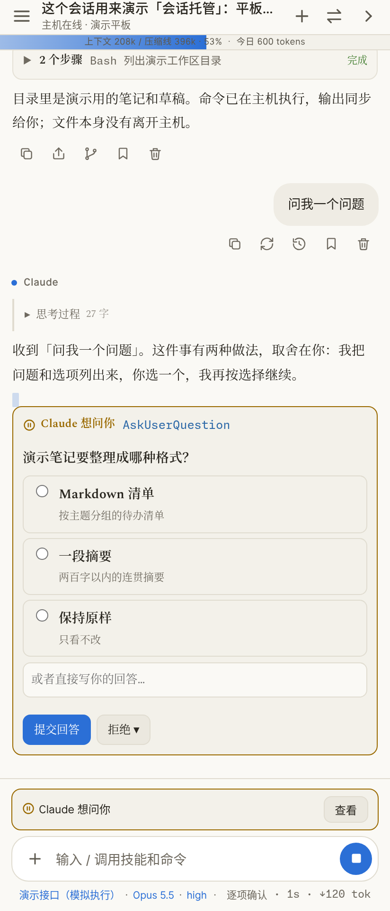
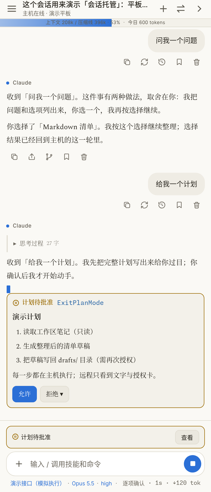
「停止」中断当前轮并挂起该会话排队消息；已执行的文件操作不会回滚。恢复时发「继续」或新要求（是接续对话，不是 SIGSTOP 内存冻结恢复）。
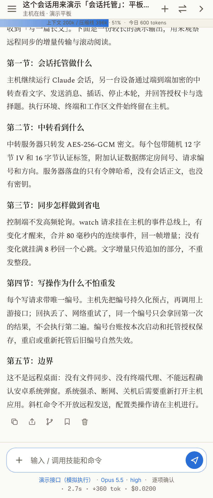
控制端不发高频轮询、不是 SSE。watch 请求挂在主机事件总线上：有变化才醒来，合并 80ms 内连续事件回一帧增量；无变化挂满 8 秒回心跳。文字增量只传追加部分（tailPatch），不重发整段；历史/范围失效才 reset 全量对齐。
面板可见时配置约 2.5s poll 一次；聊天页用事件驱动 watch。切页/关闭用 AbortController 取消；失联立即禁用控制按钮（12s watchdog），成功同步后恢复。读历史不替换正在看的段落、不抢焦点，保留滚动位置与草稿。
主机 list.history=1 支持固定 from/to/size/exclude 的双向字节范围历史窗口（MAX_PAGES=8）；前翻传 before/exclude、后翻传 after/until/exclude。内容或范围失效丢旧偏移重新同步。旧主机缺能力时显示尾页但翻历史要求升级。
侧栏「远程」分组直接列出已配对设备的托管会话（运行/待答/待命圆点 + 设备名），点一下进入。分组被上游 renderSideRecent 整块重写后由 MutationObserver/定时检查补回；侧栏没打开时零请求零重画。
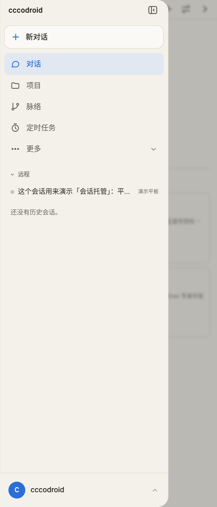
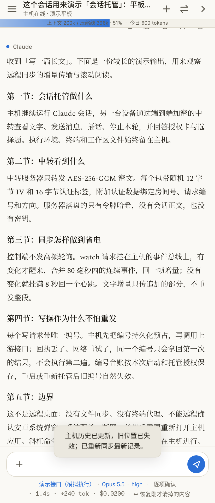
多控制端同时使用时，授权首次回答有效；过期卡片报错，不会批准另一个请求。消息操作（删除/撤销/分叉/回退/书签）在主机执行，控制端只发有限白名单请求；新分支不自动扩展托管授权。
中转是独立 Python aiohttp 服务，前缀 /cc-host/v1，只监听 127.0.0.1:7865，接在现有 Caddy 443 后。只中转不透明密文，无文件/终端代理。
CC_HOST_ENROLL_TOKEN=<43字符 base64url 强随机> CC_HOST_STATE=/var/lib/cc-host-relay/rooms.json # 0600，仅令牌 SHA256 CC_HOST_PORT=7865 CC_HOST_BIND=127.0.0.1
cc-host-relay.service）；环境文件 0600。/cc-host/v1/*，不迁移原有路由；改配置前备份、验证后重启。GET /cc-host/v1/health → {ok:true,protocol:1}，公开、不泄露房间。| 端点 | 凭据 | 说明 |
|---|---|---|
| POST /rooms | enrollToken | 建房 → {room,hostToken,clientToken}；最多 32 房间；持久化成功才返回 |
| DELETE /rooms/:room | hostToken | 吊销双方凭据、取消等候请求 |
| GET /rooms/:room/poll | hostToken | ≤20s 长轮询 → {requests:[{id,packet}]}；一次≤4；只允许一个 poll（第二个 409） |
| POST /rooms/:room/rpc | clientToken | {id,packet} 入主机队列，≤25s 等回执；过期 504；同 id 活跃重复 409 |
| POST /rooms/:room/reply | hostToken | {id,packet}；未知/过期 id 409 |
限制：JSON body ≤4MiB、密文串 ≤3MiB；每房间 ≤16 未完成 RPC、≤1 poll；全局 ≤64 未完成。错误统一 {error}；Cache-Control: no-store。
| op | 类型 | 说明 |
|---|---|---|
| list | 读 | {boot,name,sync,resume,history,actions,info,sessions[]}；只列已托管会话；成功=此刻主机在线 |
| session | 读 | 历史页 + live + run/perms/queue/info/range/marks；翻页 before/after/until/exclude |
| watch | 读 | 事件驱动增量长轮询；revision/immediate；reset 或 delta 或 unchanged |
| send | 写 | {message,inject}；1–24000 字；拒绝 / 斜杠命令；幂等 |
| stop | 写 | {runId}；只停这一会话、挂起其队列 |
| answer | 写 | {runId,id,behavior,answers,message,interrupt}；无始终允许；cut 禁止 allow |
| message | 写 | {action:delete/undo/fork/rewind/mark,revision,…}；主机执行、核对历史指纹 |
/api/hosting/：status、local-sessions、host、host-toggle、host-remove、pair-code、share、pair、forget、rpc。凭据与会话文字不缓存；不增加公开入口。
下面两块是真实生产前端（左：平板主机，右：手机控制端），经真实 Python 中转与真实托管引擎/适配器/事件总线通信；唯一模拟的是模型执行（脚本剧本）与公网（回环中转）。所有按钮走真实 RPC。
sh start.sh，然后访问 http://127.0.0.1:17800/。图文部分仍可正常阅读。每条记录是一次经过中转的包。head 是 base64url 密文片段——服务器没有密钥，解不开；落盘只有令牌哈希。
| # | 方向 | 请求 id | 字节 | 密文片段（不透明） |
|---|
| 组件 | 真 / 假 | 说明 |
|---|---|---|
| 前端页面 / 组件 / 面板 | 真 | 已安装应用的生产 web 资源，逐字节加载 |
| 托管引擎 / 适配器 / 加密 | 真 | 生产 gw/hosting 模块，AES-GCM、幂等台账、boot/grant 全真 |
| 排队 / 插话 / 停止 / 授权 / 事件总线 | 真 | 生产 queue/runs/bus/sessions/bookmarks 路由 |
| 中转服务 | 真 | 真实 relay/server.py，仅改监听回环端口 |
| 模型执行 | 模拟 | 脚本剧本替换 startRun，模拟一轮输出/工具/授权 |
| 公网传输 | 模拟 | 回环中转代替公网 HTTPS；时延不代表实网 |
| 会话数据 | 模拟 | 演示剧本与隔离 HOME，不读真实配对/真实会话 |